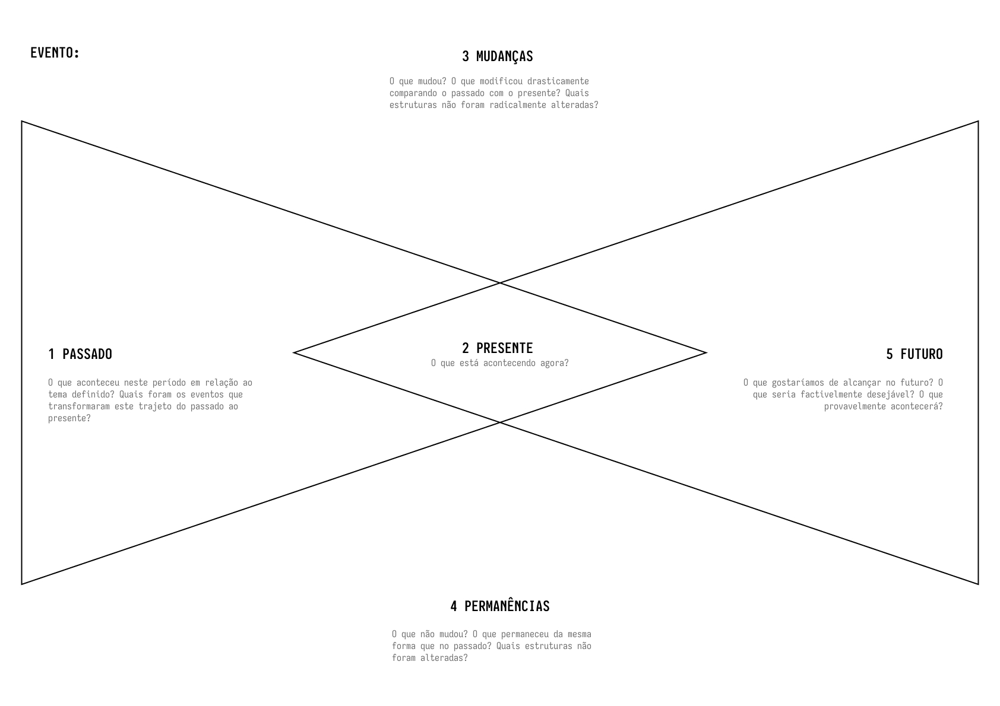
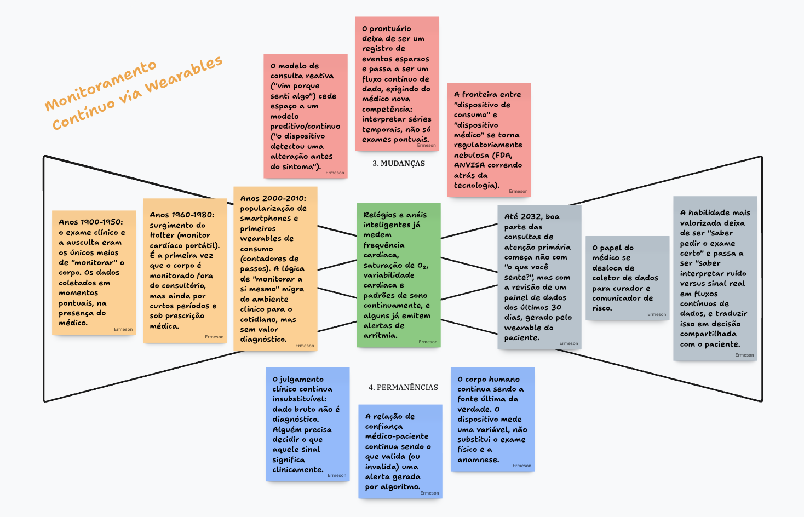

1. Passado
O que já aconteceu e explica por que estamos onde estamos hoje.
Curso de Administração · Disciplina Estudos de Futuros
Na Unidade 2, você aprendeu a captar sinais fracos — indícios ainda dispersos de mudanças que podem se tornar relevantes. Mas um sinal fraco, sozinho, não conta uma história completa. Ele sempre tem uma raiz no passado e sempre convive com elementos da organização que resistem à mudança. Esta unidade apresenta o PPF (Passado, Presente e Futuro), uma ferramenta construída a partir de dois triângulos que se cruzam, que organiza qualquer fenômeno organizacional em cinco elementos e força o analista a responder, ao mesmo tempo, "o que vai mudar?" e "o que não vai mudar, não importa o cenário?".
Use o menu ao lado para navegar entre as seções. O conteúdo acompanha a rolagem da página.
01 — Fundamentos
Pode parecer contraintuitivo que uma disciplina chamada "Estudos de Futuros" dedique tanto tempo ao passado. Mas essa é, na verdade, uma característica estrutural do campo, não um desvio. Um estudo de referência sobre prospecção de cenários na área da educação resume bem essa lógica: pensar o futuro é, antes de mais nada, aprender a decifrar o presente a partir dos desafios historicamente acumulados — não é possível projetar cenários plausíveis sem antes entender de onde as tensões atuais vêm (Thiesen, Garcez & Guimarães, 2014).
Essa ideia tem uma consequência prática direta para a gestão: quando uma organização projeta o futuro sem examinar sua própria trajetória, ela corre dois riscos opostos e igualmente perigosos. O primeiro é superestimar a ruptura — imaginar que tudo vai mudar, ignorando o que sua história mostra ser estruturalmente resistente. O segundo é subestimá-la — assumir que o futuro será apenas uma extensão linear do passado, ignorando os sinais fracos que já apontam para descontinuidades reais.
Saiba mais: Prospecção de cenários em educação: dos desafios do presente às possibilidades de futuro
02 — Tradição Teórica
Essa tensão entre o que muda e o que permanece não é uma invenção pedagógica isolada — ela está no núcleo teórico dos Estudos de Futuros como campo científico. Wendell Bell, em sua obra de referência Foundations of Futures Studies, selecionada pela Association of Professional Futurists como uma das dez obras mais importantes do campo, argumenta que uma das tarefas centrais da disciplina é justamente identificar, entre os processos sociais observáveis, o que tende à continuidade e o que tende à mudança (Bell, 1997).
Jim Dator, um dos fundadores do programa de doutorado em Estudos de Futuros da Universidade do Havaí, reforça essa mesma lógica a partir de outro ângulo: ao propor seus quatro futuros arquetípicos — Continuidade, Colapso, Disciplina/Limites e Transformação —, Dator mostra que mesmo os cenários mais radicais de ruptura (Colapso, Transformação) só fazem sentido quando comparados a um cenário-base de Continuidade, que representa a extensão das tendências e estruturas já estabelecidas (Dator, 2009). Ou seja: para imaginar a ruptura, é preciso primeiro entender bem o que está sendo rompido.
O PPF opera exatamente dentro dessa tradição: ele não pergunta apenas "o que vai mudar?", mas força o analista a responder, ao mesmo tempo, "o que não vai mudar, não importa o cenário?".
03 — A Ferramenta
O PPF é construído visualmente a partir de dois triângulos que se cruzam. Essa construção não é apenas estética — ela representa uma ideia central: passado e futuro só fazem sentido quando lidos a partir do presente, que é o ponto de interseção entre os dois triângulos. A ferramenta organiza a análise em cinco elementos:
O que já aconteceu e explica por que estamos onde estamos hoje.
O ponto de observação, onde passado e futuro se encontram e são interpretados.
O que está se transformando; frequentemente, os sinais fracos de ontem ganhando corpo e visibilidade.
O que resiste à mudança; o núcleo estável que se mantém independentemente do cenário.
Não o futuro, mas futuros plausíveis, construídos a partir da tensão entre mudança e permanência.
Vale reforçar um ponto conceitual importante: o Presente, no PPF, não é um dado bruto e neutro. Ele é sempre uma leitura — o ponto onde um analista, com seus critérios e sua bagagem, decide o que do passado é relevante e o que do futuro parece plausível. Essa ideia de que a interpretação do presente é sempre um ato ativo, e não uma simples constatação, está alinhada à noção de futuros plurais já estudada na Unidade 1: não existe uma leitura única e objetiva do presente, assim como não existe um único futuro.
04 — Passado
O primeiro passo prático do PPF é identificar os antecedentes históricos relevantes de um fenômeno atual. Isso não significa fazer um levantamento histórico exaustivo — significa selecionar, entre os eventos passados, aqueles que efetivamente ajudam a explicar por que a situação presente tomou a forma que tomou.
Uma pergunta orientadora é útil aqui: o que precisou acontecer antes para que este sinal ou esta mudança fossem possíveis hoje? Frequentemente, a resposta revela uma sequência de pequenos passos técnicos, culturais ou regulatórios que, isoladamente, pareciam irrelevantes — mas que, somados, criaram as condições para a mudança atual.
05 — Presente
Como já apontado na seção anterior, o presente no PPF não é uma fotografia neutra da realidade — é o ponto de interseção onde o analista organiza o que enxerga do passado e do futuro. Isso tem uma implicação prática importante para o trabalho em grupo: duas pessoas analisando o mesmo fenômeno organizacional, a partir do mesmo conjunto de sinais fracos, podem chegar a leituras de presente diferentes — e isso não é um erro metodológico, é uma característica esperada da ferramenta.
É por isso que a aplicação do PPF costuma ser mais rica quando feita coletivamente, permitindo confrontar diferentes leituras do mesmo presente antes de avançar para os cenários de futuro.
06 — Mudanças
Este é o elemento do PPF mais diretamente conectado ao trabalho já feito na Unidade 2. Os sinais fracos que vocês aprenderam a captar são, frequentemente, a matéria-prima bruta do elemento "Mudanças" — mas nem todo sinal fraco vira, automaticamente, uma mudança relevante dentro do PPF. O trabalho de preencher esse elemento da ferramenta exige perguntar: este sinal, se confirmado, altera de fato alguma estrutura, processo ou comportamento central da organização, ou é um ruído passageiro?
07 — Permanências
Se "Mudanças" tende a ser o elemento mais intuitivo do PPF (afinal, é sobre isso que a maior parte da literatura de inovação fala), "Permanências" é o elemento mais frequentemente negligenciado — e, por isso mesmo, o mais valioso. Toda organização tem um núcleo de elementos que resistem à mudança: pode ser uma necessidade humana básica que o produto atende, uma competência técnica insubstituível, um valor cultural, ou uma relação de confiança que nenhuma tecnologia consegue automatizar por completo.
Identificar corretamente as permanências evita um erro estratégico comum: abandonar, em nome da inovação, aquilo que era exatamente a fonte da vantagem competitiva da organização.
08 — Futuros
O último elemento do PPF é a construção de um ou mais futuros plausíveis — não previsões, mas cenários concretos e datados que decorrem logicamente da tensão entre o que muda e o que permanece. Um bom cenário produzido a partir do PPF deve conseguir responder a duas perguntas: qual mudança este cenário assume como já consolidada? e qual permanência este cenário ainda preserva?.
Um cenário que ignora completamente as permanências identificadas tende a soar como ficção científica; um cenário que ignora completamente as mudanças tende a soar como mera repetição do presente.
09 — Anatomia da Ferramenta
Na prática, a aplicação do PPF começa por nomear o evento ou tema em análise e, a partir dele, preencher os cinco campos dispostos ao redor dos dois triângulos que se cruzam. Cada campo vem acompanhado de perguntas orientadoras que ajudam o grupo a não deslizar de um elemento para outro sem perceber: à esquerda, o Passado pergunta o que aconteceu e quais eventos transformaram a trajetória até aqui; no centro, onde os triângulos se cruzam, o Presente pergunta apenas o que está acontecendo agora; acima, as Mudanças perguntam o que se modificou drasticamente entre o passado e o presente; abaixo, as Permanências perguntam o que não mudou, mesmo com todo o resto em transformação; e à direita, o Futuro pergunta o que se gostaria de alcançar e o que provavelmente acontecerá. É essa disposição espacial — Passado e Futuro nas pontas, Mudanças e Permanências nas bordas superior e inferior, Presente no meio — que dá nome à ferramenta e que obriga o analista a preencher os cinco campos antes de tirar qualquer conclusão.

Um tema que ilustra bem o preenchimento da ferramenta é o do monitoramento contínuo de saúde via wearables — relógios e anéis inteligentes que hoje medem frequência cardíaca, saturação de oxigênio, variabilidade cardíaca e padrões de sono de forma ininterrupta, e já emitem alertas de possíveis arritmias. O Passado remonta ao exame clínico pontual e ao surgimento do Holter nas décadas de 1960-1980, passando pela popularização de smartphones e dos primeiros wearables de consumo nos anos 2000. A Mudança central é a passagem de um modelo de consulta reativa ("vim porque senti algo") para um modelo preditivo e contínuo ("o dispositivo detectou uma alteração antes do sintoma"), o que também empurra a fronteira regulatória entre "dispositivo de consumo" e "dispositivo médico". Já as Permanências mostram que o julgamento clínico continua insubstituível — dado bruto não é diagnóstico — e que o corpo humano segue sendo a fonte última da verdade, com o dispositivo medindo uma variável, não substituindo o exame físico e a anamnese. O Futuro projetado é o de um médico que desloca seu papel de "pedir o exame certo" para "interpretar ruído versus sinal real" em fluxos contínuos de dados.

10 — Aplicações
Os três casos a seguir mostram como o mesmo raciocínio do PPF — cruzar Passado, Mudanças e Permanências para chegar a Futuros plausíveis — se aplica a setores bem diferentes.
Uma loja física tradicional aplica o PPF ao sinal fraco "crescimento do live commerce" — Passado (democratização de redes sociais e criadores de conteúdo), Mudanças (compra por impulso mediada por influenciadores), Permanências (a necessidade humana de confiar em uma recomendação antes de comprar), Futuros (atendentes de loja se tornando também apresentadores de vendas ao vivo).
Uma área de T&D aplica o PPF ao sinal fraco "uso de IA generativa para treinamentos personalizados" — Passado (e-learning padronizado dos anos 2000), Mudanças (trilhas de aprendizagem adaptativas), Permanências (a necessidade de prática supervisionada para consolidar competências complexas), Futuros (tutores de IA como complemento, não substituto, de mentores humanos).
Um banco tradicional aplica o PPF ao sinal fraco "crescimento de comunidades de investidores em redes sociais" — Passado (agências físicas como único canal de orientação financeira), Mudanças (descentralização da informação sobre investimentos), Permanências (a necessidade de confiança institucional em momentos de crise), Futuros (bancos atuando como curadores de informação, não mais como únicos detentores dela).
11 — Estudo de Caso
Para ilustrar a ferramenta com um caso real e bem documentado, vamos aplicar o PPF à trajetória da Netflix — deixando claro que esta é uma leitura nossa, construída com a ferramenta, e não uma análise que a própria empresa tenha nomeado dessa forma.
Passado: a Netflix foi fundada em 1997 por Reed Hastings e Marc Randolph, na Califórnia, como um serviço de aluguel de DVDs pelo correio, sem cobrança de multas por atraso — uma inovação direta em relação ao modelo das locadoras físicas tradicionais, como a então dominante Blockbuster (Exame, 2025; Dry Telecom, 2025). Em 2000, a Netflix chegou a oferecer uma parceria à Blockbuster por 50 milhões de dólares; a proposta foi recusada, em um episódio hoje frequentemente citado como um dos maiores erros corporativos da história (Dry Telecom, 2025).
Presente (interseção): a Netflix hoje é lida, simultaneamente, como uma empresa de tecnologia, uma distribuidora global de conteúdo e um estúdio de produção original — uma identidade múltipla que só faz sentido quando olhamos para a trajetória que a formou.
Mudanças: em 2007, a empresa lançou seu serviço de streaming, eliminando a dependência da logística física de envio de DVDs. Em 2013, deu um segundo salto estrutural, passando de distribuidora de conteúdo de terceiros para produtora de conteúdo original, com o lançamento de House of Cards (Diário de Séries, 2024). Cada uma dessas mudanças exigiu abandonar um modelo de negócio que, no momento anterior, era a própria razão do sucesso da empresa.
Permanências: apesar das rupturas de modelo de negócio, um elemento central nunca mudou desde 1997: a proposta de eliminar fricção no acesso ao entretenimento — primeiro, ao eliminar as multas por atraso das locadoras físicas; depois, ao eliminar a espera pelo correio; por fim, ao eliminar a necessidade de esperar por um estúdio externo para produzir o conteúdo desejado pelo público. A permanência não é o formato (DVD, streaming, produção própria) — é a promessa de conveniência e controle do consumidor sobre o próprio consumo.
Futuros: a leitura da tensão entre essas mudanças e essa permanência sugere um cenário plausível de continuidade da mesma lógica: novas fricções na experiência de entretenimento (como formatos rígidos e não-interativos) tendem a ser os próximos alvos de eliminação, o que já se reflete em experimentações da empresa com conteúdo interativo e personalização cada vez mais sofisticada via algoritmos de recomendação.
Esse exercício mostra como o PPF evita duas leituras simplistas e igualmente erradas sobre a Netflix: a de que ela é "apenas uma empresa de tecnologia que sempre se reinventou do zero" (ignora a permanência que sustenta todas as reinvenções) ou a de que ela é "apenas uma locadora de DVD que teve sorte" (ignora as mudanças estruturais reais que ela promoveu).
Saiba mais: Como a Netflix foi do DVD porta a porta à dominação global do entretenimento
12 — Tradição Metodológica
O PPF não é uma invenção isolada — ele pertence a uma família mais ampla de métodos de Estudos de Futuros que organizam a análise em torno da tensão entre três tempos. O parente mais documentado dessa família é o Triângulo de Futuros, desenvolvido pelo futurista Sohail Inayatullah a partir de um workshop realizado em 1997 na Southern Cross University, na Austrália, e formalmente batizado nesse nome em 2003 (Inayatullah, 2023).
O Triângulo de Futuros mapeia três forças em tensão: o peso do passado (weight of history), o empurrão do presente (push of the present) e o puxão do futuro (pull of the future) — fatores observáveis que, juntos, delimitam o espaço de futuros plausíveis para um determinado tema (Riedy, 2012; Inayatullah, 2023). A lógica é irmã da do PPF: nenhum dos três tempos, isoladamente, determina o futuro — é a tensão entre eles que produz o espaço de possibilidades.
Essa aproximação teórica não diminui a originalidade do PPF como ferramenta de ensino — pelo contrário, mostra que a intuição pedagógica por trás dele (organizar a leitura do presente a partir da tensão entre continuidade e mudança) está ancorada em uma tradição metodológica sólida e amplamente validada no campo de Estudos de Futuros.
Saiba mais: The Futures Triangle: Origins and Iterations (Inayatullah, 2023) · El Triángulo de Futuros · The futures triangle (Riedy, 2012)
13 — Vídeo
"2.9 Prática de Passado, Presente e Futuros [PPF]" — vídeo da Escola Brasileira de Futuros que retoma, de forma didática, a aplicação prática da ferramenta apresentada nesta unidade.
Saiba mais: Assistir no YouTube
14 — Bibliografia